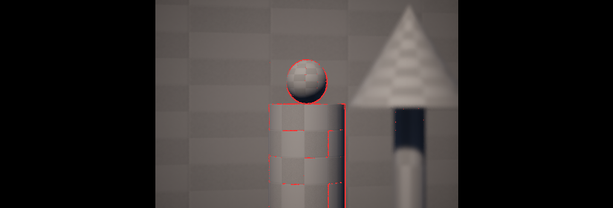
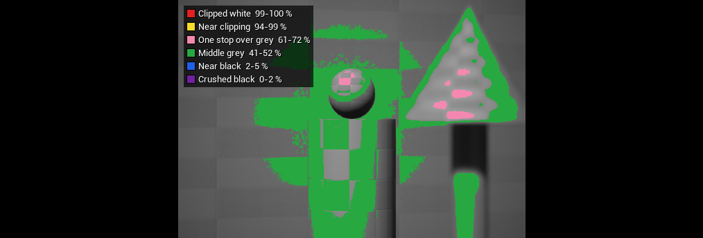
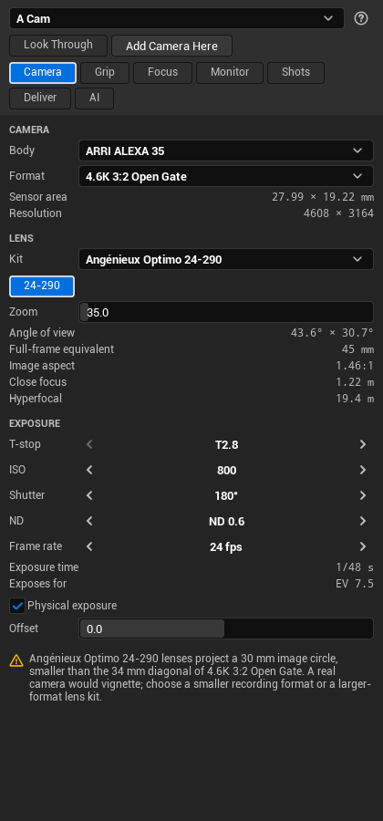

Rosc User Guide
A camera department inside Unreal Engine. Build a real camera package, put it on a dolly or a crane, block the move, judge exposure and focus, and deliver a review movie and a VFX handoff, all from one panel.
1. Install and open
Rosc works in Unreal Engine 5.8 on Windows.
- Install Rosc to the engine from Fab, or copy the
Roscfolder into your project'sPluginsfolder. - In the editor choose Edit > Plugins, find Rosc under Cinematics, turn it on and restart the editor. The engine plugins it needs for rendering (Movie Render Pipeline and Apple ProRes Media among them) are turned on with it.
- Open the panel with Window > Cinematics > Rosc. Dock it beside the viewport; it is laid out to work as a narrow column.
The ? button at the top of the panel opens this guide.
2. Your first shot
Rosc comes with a small sample stage: a set in daylight, a stand-in called Anna behind a table, a lamp nearer the camera, and an ARRI ALEXA 35 with a 75 mm on a 30 ft telescoping crane. The lens is nearly wide open, so Anna is sharp and the rest of the set is soft. This walk-through takes it from an empty Sequencer to delivered files in about ten minutes.


- Open the stage. In the Content Browser open Settings and turn on Show Plugin Content. Then open Plugins > Rosc Content > Sample > RoscSampleStage. Save a copy into your own project (File > Save Current Level As) so that your work is kept there.
- Choose the camera. In the picker at the top of the panel choose A Cam. Press Look Through to see its picture in the viewport.
- Look at the camera package. The Camera tab shows the body, its recording format and the lens kit. Press another focal length in the kit to change lens, then press 75 again. The camera is exposed like a real one: T2.8 at ISO 400 with a 180° shutter and ND 2.1, for full sun.
- Judge the exposure. In the Monitor tab turn on False Colour. The legend in the picture names each band: Anna sits in middle grey and the sunlit floor a stop over. Open the iris a stop in the Camera tab and watch the bands move, then put it back. Turn False Colour off.
- Walk the move. In the Grip tab the camera is on a crane, with two marks. Press Mark 2 to put the crane on its end position and Mark 1 to come back. The move between them takes four seconds.
- Make the shot. In the Shots tab press New Shot. Rosc makes a sequence, opens it in Sequencer and adds a shot through A Cam.
- Bake the move. Back in the Grip tab press Bake to Sequencer. Play the shot in Sequencer: the crane booms up and swings as a crew would move it.
- Check the focus. The Focus tab says the focus is following Anna, and shows the near and far limits of what is sharp. In the Monitor tab turn on Peaking: a coloured edge is drawn on Anna and on nothing else, because only she is in focus. Press Pick Focus and click the lamp, and the edge moves to the lamp.
- Deliver for review. In the Deliver tab choose Review. Preflight looks through the sequence; when it says Ready to render, press Render Review. Open Folder shows the movie, with its slate and burn-ins.
- Deliver for visual effects. Choose VFX Passes and press Render VFX Passes. Each frame is an OpenEXR file with depth, normals, motion vectors and mattes, and beside the frames are the camera as FBX and a file of camera and lens data.
Everything you do in the panel is one step in Unreal's undo history. Ctrl+Z takes back a lens change, a mark or a bake like any other edit.
3. The panel

- The camera picker at the top names the camera the panel is working on. Selecting a Cine Camera in the level switches to it; selecting a light or a prop keeps the camera you had.
- Look Through shows that camera's picture in the viewport. A free camera then moves with the viewport. A camera on a support is held by the support, and the Grip tab moves it. Press it again to step back: the viewport returns to where it was before.
- Add Camera Here makes a new Cine Camera from the view you have now. Move through the level as usual; when you like the framing, press it. The new camera is where the viewport is, looks the same way, and has the lens of its kit that takes in the same view, in a camera package ready to edit.
- The departments are the tabs below: Camera, Grip, Focus, Monitor, Shots, Deliver and AI.
Every control can be reached with Tab and worked with Enter, Space and the arrow keys, and each has a tooltip that says what it does. Warnings carry an icon and a sentence that says what is wrong and what to do about it.
Distances are shown in metres, or in feet and inches. Choose which under Edit > Editor Preferences > Plugins > Rosc.
4. Camera
A camera package is a real body, one of its recording formats, and a lens from a real kit.
- Body and Format set the sensor area and resolution the camera records. Film gauges are in the list beside digital bodies.
- Kit chooses a lens kit, spherical or anamorphic. The buttons under it are the focal lengths that exist in that kit; a zoom has a Zoom control that stays inside its range.
- Below the lens are the facts a DOP asks for: angle of view, full-frame equivalent, image aspect, close focus and hyperfocal distance.
- T-stop, ISO, Shutter, ND and Frame rate step the way the controls on a camera do: thirds of a stop for iris and ISO, whole stops for ND.
- Physical exposure decides what those settings do. Turned on, they set how bright the picture is, as on a real camera, and the set must be lit at real-world light levels. Turned off, they set depth of field and motion blur only, and the level's own exposure is left alone. Offset brightens or darkens the picture in stops when it is on.
Rosc tells you when a combination would not work on a real set, such as a lens whose image circle does not cover the recording format. It advises; it does not stop you.
A camera that has no package yet shows Build Camera Package, which starts from the camera's current focal length and aperture.
5. Grip
A free camera goes wherever you put it. On a support it moves the way that equipment moves, and Rosc tells you when a move asks for more than the equipment can do.
| Support | How it moves |
|---|---|
| Tripod with fluid head | Pans and tilts in place. |
| Slider, 1 m or 1.5 m | Slides along a short rail. |
| Dolly on track | Travels along straight or curved track, with a rising column. |
| Jib, 2 m or 4 m arm | A fixed arm that swings and booms. |
| Telescoping crane, 22, 30 or 50 ft | Swings, booms and extends, with a remote head. |
| Steadicam, handheld, drone | Go where the operator or pilot takes them, at the speed each can manage. |
- Choose the support in Camera on. It is stood up under the camera, so the camera does not move when you choose one.
- Set the support with the controls under Position. Each is an axis of that equipment (travel, lift, swing, boom, extension, pan, tilt, roll) and stays inside its range.
- Where the shot starts, press Mark Position. Set the support where the shot ends and press it again. A move runs from each mark to the next; a shot can have several.
- For each move set Move time, and Ease in and Ease out: how much of the move is spent getting up to speed and coming to rest.
- Under Operator choose whose hands the camera is in (locked off, fluid head, remote head, Steadicam, handheld, drone) and how much they move. Each Take moves a little differently, and the same take number always gives the same movement.
- Press Bake to Sequencer. The move is written into the open sequence from the playhead, as keys on the support's axes with the operator's movement on the camera.
Dolly zoom
On a dolly or a slider, each move has a Dolly Zoom switch. Turned on, the lens zooms as the camera travels so that what the focus is on stays the same size in the frame while the background stretches or closes in behind it.
- Put a zoom lens on the camera in the Camera tab. A prime cannot zoom, and the tab says so.
- Hold the focus on the subject first, with Pick and Hold or Follow Selected in the Focus tab. The subject the focus is held on is the one kept at its size.
- The tab shows the focal lengths the move starts and ends on. If the move asks for more than the lens has, it says so, and the zoom stops at the end of the lens's range.
- Bake to Sequencer writes the zoom into the sequence with the move.
If a move is faster than the support can travel, or a mark is past the end of its reach, the tab says which axis, by how much, and the shortest time the move could take. You can bake it all the same: it is a CG camera, and the choice is yours.
After a bake, changing a mark or the operator does not change what Sequencer plays. The tab says so until you bake again.
To curve a dolly's track, select the dolly in the level and move the points of its track in the viewport.
6. Focus
- Pick Focus, then click a subject or any part of one in the viewport, sets the focus to the distance of what you clicked. Distance sets it by hand.
- Pick and Hold, then click, holds the focus on the very point you clicked: an eye, a hand, a place on the floor. When the camera or the subject moves, the focus is pulled to keep that point sharp. The tab says what the focus is Held on.
- Follow Selected keeps the focus on the actor selected in the level, as a whole, as it and the camera move. Let Go leaves the focus where it is.
- Depth of Field shows the near limit, far limit, depth of field and hyperfocal distance for the lens, stop and focus distance, as they change.
- Mark Focus stores what the focus is on as a focus mark: the point or subject it is held on, or else its distance. Make as many as the shot needs. A mark on a point says what it is on, and its distance is measured to where the point is now.
- Pressing a mark goes to it. Rack beside a mark pulls focus from where it is to that mark over the Rack time, and writes the rack into Sequencer from the playhead. A rack to a point keeps the point sharp for the rest of the shot, even while the camera travels.
A lens does not focus nearer than its close focus. When the subject is nearer than that, the tab says so and says what would put it right. When you put on a lens that cannot focus as near as the focus was set, the lens goes to its close focus and a note says where the focus was and where it is now.
7. Monitor
The monitor's tools are drawn over the picture in the level viewport, as on an on-set monitor. They are never in a render, and they are your own view settings: they are not saved in the level and they are not part of the undo history.
| Tool | What it shows |
|---|---|
| False Colour | Signal level as bands of colour, from crushed black through middle grey to clipped white, with a legend in the picture. |
| Zebras | Stripes on everything at or above the Zebra level. |
| Waveform, Histogram | Scopes of the whole picture, drawn in its corners. |
| Peaking | An edge in a colour of your choice on what is in focus, and only on that. It shows best with a shallow depth of field: a long lens, a wide stop, a near subject. When everything in the frame is within the depth of field, everything has an edge. |
| Frame Lines | The frame the shot is delivered in, chosen in Deliver in (2.39:1, 1.85:1 and so on). |
| Safe Areas, Centre Mark | Action and title safe, and the centre of the frame. |
| Data Readout | The camera's lens and exposure settings, written in the picture. |
The tools measure the picture as it is displayed, after Unreal's tone mapping, which is what a monitor on set measures.
8. Shots
- Shot List lists the shots of the sequence open in Sequencer. New Shot adds one through the panel's camera, and starts a sequence if none is open. Choosing a shot puts the playhead at its start.
- This Shot holds its scene, size (wide, medium, close-up and the rest), move and notes. Camera, lens, support, start and running time are read from the shot itself, so they are never out of date.
- Grab Frame keeps the picture at the playhead as a storyboard frame of the shot.
- Overhead Plan draws the shot from above: where the camera starts (A) and ends (B), its track, what the lens takes in and the subjects near it.
- Export Paperwork writes the shot list and the camera report as CSV files, and a page with the storyboard frames and plans to print or save as PDF from a web browser.
9. Deliver
Choose what the delivery is for. Rosc sets up the render.
| Delivery | What is written |
|---|---|
| Draft | A small, quick MP4 movie of each shot at half the review size, with burn-ins, to look at while you work. It plays in any player. |
| Review | A light ProRes movie of each shot in its delivery frame, with a slate and burn-ins if you want them, to pass around and comment on. |
| VFX Passes | Every frame of each shot as a scene-linear OpenEXR file with depth, normals, motion vectors and mattes; the camera as FBX; a file of camera and lens data for every frame; and a copy of the sequence that opens without Rosc. |
| Master | The finished picture of each shot as a ProRes 4444 movie in its delivery frame, with smooth motion blur and nothing drawn over it. |
| YouTube | The finished picture of each shot as an H.264 MP4 file at the settings YouTube asks for, at 1080p or 4K. The file is made on your computer; uploading it is up to you. |
| DCP Source | The finished picture of each shot as a ProRes 4444 movie in the cinema's frame, at 2K or 4K: 2048 by 858 for a 2.39:1 picture and 1998 by 1080 for 1.85:1. A DCP program such as DCP-o-matic makes the cinema package from it. Rosc does not write the DCP itself. |
- Size, for YouTube and DCP Source, chooses between 1080p or 2K and 4K. 4K takes about four times as long to render.
- Files: the folder deliveries are written under, and the name of each file. Browse picks the folder, a folder dragged from Explorer can be dropped on the box, and Show in Explorer opens it. Add Token puts in parts that change, such as the shot's name, the scene, the camera or a version that counts up by itself. The name has to have the shot's name in it,
{shot}, so that no shot is written over another; a name without it stays in the box with that reason under it, and files keep the name they had until it is put right. The first file of each shot is shown before you render. - Preflight looks through the sequence for the mistakes that spoil renders: a shot with no camera cut, a camera whose frame rate is not the sequence's, exposure left to adapt by itself, two shots with one name, a DCP source that does not play at 24 frames a second. Each finding says whether it stops the render or is only worth knowing, and most have a button that puts it right. It looks again by itself after every change you make in the editor, in any tab, the Details panel or Sequencer, and after every undo.
- Render starts the delivery. The editor is busy until it is done; Stop ends it and keeps what was written.
- Bake for Handoff makes the copy of the sequence that plays on plain Cine Cameras and Sequencer keys, without rendering. A VFX Passes delivery makes it by itself.
Visual effects usually ask for ACEScg. Preflight tells you when the project does not work in it and offers Work in ACEScg, which takes effect when the editor is restarted. Until then the files are scene-linear in the project's own colour space, and say so in their metadata.
10. AI (optional)
Nothing in this tab is needed for anything else in Rosc, and nothing leaves your machine until you have agreed to it in the tab, for this project and for the place it is sent.
Shot Assistant
Describe a shot in your own words, such as “Crane up over the table to reveal Anna, about eight seconds, and keep her sharp.” The assistant answers with a plan in the steps Rosc's tabs would take: the support, the marks, the timing, the focus. Read it, then Apply Plan or Discard. Applying is one step you can undo.
- The assistant is a Claude model, asked with your own Claude API key. Put the key in Open AI Settings (Editor Preferences > Plugins > Rosc AI). It is kept in your own settings, not in the project.
- Planning a shot sends the words you type and a description of the set: the camera and its support, the names, sizes and positions of the things near the camera, and the names of the shots in the open sequence. No pictures are sent. Each request is billed to your key.
- Withdraw Agreement takes back your agreement at any time.
Pictures
A depth map, a matte or a lens estimate for a still or a frame of a plate: pictures Unreal did not render. Depth and mattes of what Unreal renders come exactly, with a VFX delivery.
- Picture is the still or frame to work on. Press Browse to pick it, or drag the file from Explorer and drop it on the box; there is no need to type its path. Show in Explorer opens the folder it is in.
- Depth Map and Matte write image files beside each other in the project's saved folder.
- Estimate Lens reads the field of view a reference picture looks to have been taken with, and names the lens of the camera's kit that comes nearest. Put On puts that lens on the camera.
- Run on chooses where the work is done: in the editor, on this machine's graphics card; in a helper program on this machine, which needs a Python installation with
onnxruntime,numpyandpillow; or on a server your studio runs, which asks for your agreement first because the picture leaves this machine.
Models
The models are not part of Rosc. Each is downloaded once from its makers' page, under its makers' licence, into a folder all your projects share. Read the licence before you download; the Licence button beside each model opens it.
| Model | Used for | Licence stated by its makers |
|---|---|---|
| Depth Anything V2 Small | Depth map | Apache-2.0 |
| BiRefNet Lite | Matte | MIT |
| MoGe-2 Small | Lens estimate | MIT |
11. Where files go
| What | Where, unless you choose another folder |
|---|---|
| Deliveries | Saved/Rosc/Deliveries in the project, with a folder for each sequence. Change it in the Deliver tab. |
| Paperwork | Saved/Rosc/Paperwork in the project, with a folder for each sequence. Change it in the Shots tab. |
| Depth maps and mattes | Saved/Rosc/AI in the project, with a folder for each picture. |
| Models | %LOCALAPPDATA%\Rosc\Models, shared by all projects. Change it in the AI settings. |
| Sequences and shots | Level Sequence assets in your project's content, where Sequencer's own settings put them. |
What Rosc makes is standard Unreal data: Cine Camera properties, Sequencer keys and Movie Render Graph renders. The copy made by Bake for Handoff opens in a project that does not have Rosc.
12. Good to know
- Physical exposure needs real light. With it on, a sun at a few lux gives a black picture, as it would on set. Light the level at real-world levels (full sun is about 100,000 lux) or leave Physical exposure off.
- False colour is set for Unreal's standard look. The bands are placed for the engine's default tone curve. If your project replaces the tone curve or adds a display transform, the picture is still measured correctly as a signal level, but middle grey may not fall in the band named for it.
- The monitor's tools are for the level viewport. They are kept out of every render.
- A slated review movie is two frames longer than its shot: the slate before it and a tail frame after.
- One camera to a shot. A delivery is one movie, one lens and one line of the shot list for each shot. Make each camera cut a shot of its own.
- The editor is busy while a render runs, as with Unreal's own local renders.
- A camera on a support is locked in place with Unreal's own Lock Actor Movement, and freed when it comes off the support or the support is deleted. If you open a level in a project that does not have Rosc, the support is not there but the lock still is: right-click the camera and turn off Transform > Lock Actor Movement to move it by hand. What Sequencer plays is not affected.
- A matte made in the editor holds the editor still. The matte's model needs about 10 GB of graphics memory. Run in the editor on a 16 GB card, the viewport can stand still for ten seconds or more while it works, and comes back when the matte is done; the memory is given back then too. Do not start a matte while a render is running. A server on another machine does the same job without holding this one, and so does the helper when its Python works on the processor. Depth maps and lens estimates do not do this.
- A lens estimate is an estimate. It reads perspective from one picture. Treat it as a starting point and check it against something of known size in the frame.
- The camera database is a reference, not a specification. Sensor areas, formats and lens data come from the manufacturers' published figures; check anything a shoot depends on against the manufacturer.
13. If something is wrong
| What you see | What to do |
|---|---|
| Rosc is not in the Window menu | Turn the plugin on under Edit > Plugins and restart the editor. |
| The panel says there is no camera | Press Add Camera Here, or select a Cine Camera Actor in the level. |
| Peaking draws an edge on everything | Everything is within the depth of field. Open the iris, use a longer lens or move nearer the subject; the Focus tab shows the near and far limits. |
| Dolly Zoom is not in the Grip tab | It is offered on a dolly or a slider. It needs a zoom lens, and the focus held on the subject. |
| The sample stage is not in the Content Browser | Turn on Show Plugin Content in the Content Browser's settings. |
| The picture goes black or white with Physical exposure on | The level is not lit at real-world levels. Read Exposes for in the Camera tab, then change the light or the stop, or turn Physical exposure off. |
| The camera will not move in the viewport | It is on a support. Move the support in the Grip tab, or choose No support to free it. |
| Sequencer plays the old move | The marks changed after the bake. Press Bake to Sequencer again. |
| Render is greyed out | A preflight finding stops the render. Put it right under Preflight, then render. |
| A delivery did not finish | The Output Log (Window > Output Log) says why. What was written is kept. |
| A picture job on the helper does not start | Set Python in the AI settings to a Python that has onnxruntime, numpy and pillow. |
| The assistant asks for a key or an agreement | Put your Claude API key in the AI settings, then agree in the AI tab to send shot descriptions. |